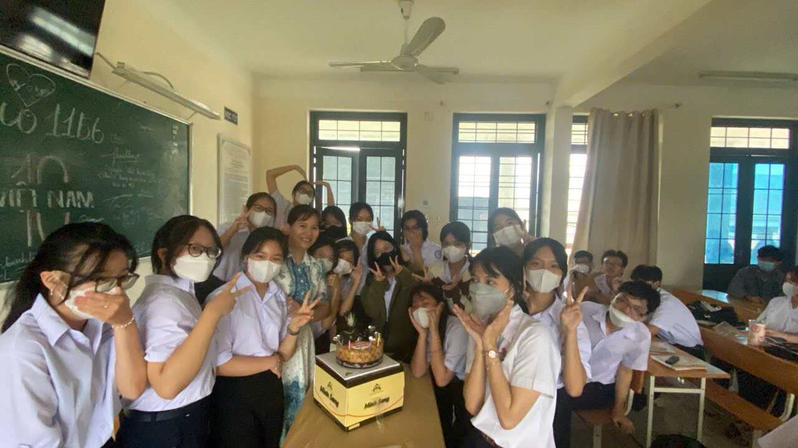
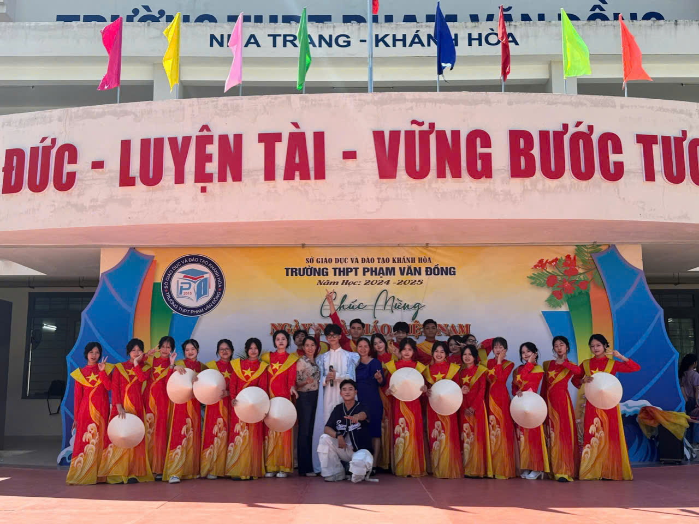

Khi vừa bước chân vào trường, lớp 10C6 chúng mình đã được tham gia vào hoạt động Hội khỏe Phù Đổng,
một sân chơi bổ ích để các bạn học sinh thể hiện tài năng thể thao và tinh thần đoàn kết.
Bằng những nỗ lực của bản thân, chúng mình đã đạt được 2 huy chương vàng danh giá.
Ngày 20/11 là dịp để 10C6 bày tỏ lòng biết ơn sâu sắc tới các thầy cô giáo, những người đã tận tâm dìu dắt chúng ta.
Chúng em xin gửi lời tri ân chân thành, chúc thầy cô luôn mạnh khỏe và thành công trong sự nghiệp trồng người.
Chúng mình cũng rất vui mừng tổ chức sinh nhật cho thầy Thái Vân, GVCN đáng iu của 10C6. Thầy không chỉ là người dìu dắt chúng ta trong học tập mà
còn là tấm gương về sự tận tâm, nhiệt huyết. Nhân dịp đặc biệt này, cả lớp đã gửi tới thầy những lời chúc mừng tốt đẹp nhất.
Tập múa dân vũ. Đây là cơ hội để chúng mình thể hiện sự đoàn kết và năng khiếu cảm thụ nghệ thuật tuyệt đối của tập thể lớp. Cùng nhau luyện tập,
lớp đã mang đến một tiết mục ấn tượng, góp phần làm phong phú thêm các hoạt động của trường.
Hoạt động đóng phim ngắn “Nha Trang, mùa thu và em” do tập thể lớp biên đạo và diễn xuất
sử dụng giai điệu nhẹ nhàng và đầy cảm xúc, qua đó xây dựng nên một câu chuyện thú vị, mang đậm dấu ấn riêng.
|
Kết thúc năm học, lớp 10C6 đã tổ chức một bữa tiệc cuối năm ấm cúng để cùng nhau nhìn lại chặng đường đã qua.
Đây là dịp để chúng mình chia sẻ những kỷ niệm, cảm xúc và tận hưởng những phút giây vui vẻ bên nhau trước khi bước vào những thử thách mới.
Bữa tiệc không chỉ là món quà tri ân dành cho nhau, mà còn là lời chúc mừng cho những thành quả mà chúng mình đạt được trong suốt một năm học đầy nỗ lực.
Ở năm lớp 11 chúng mình có rất nhiều kỉ niệm. Đầu tiên là cuộc thi làm lồng đèn trung thu.
Cả lớp đã cùng dành thời gian ra cùng phụ giúp nhựa trong các công đoạn, chúng mình còn tập trung ở nhà Thanh Long làm tới 10h để chuẩn bị cho ngày thi đó.
Còn đây là lớp chúng mình tổ chức 20/10 cho cô Thủy. Đây là dịp để chúng em tri ân người giáo tận tụy, chủ nhiệm đầy nhiệt huyết của tập thể 11B6.
Cô rất bất ngờ, và chúng mình rất vui khi thấy được nụ cười của cô.
|  |
Và vào ngày 29/10 tập thể lớp tham gia lễ trao học sinh 3 tốt của tỉnh cùng với
sự kiện sữa Malto và hai cầu thủ bóng đá Nguyễn Kim Phúc và Nguyễn Việt Anh tại quảng trường nè.
Tiếp đến là hoạt động Got Talent diễn ra vào ngày 28/11/2023. Đây là hoạt động lớn của trường.
Mỗi cá nhân đều cháy hết mình và luyện tập chăm chỉ để hoàn thành tốt tiết mục của lớp. Bằng sự cố gắng, chúng mình đã đạt được giải nhất.
Cả lớp 11B6 cùng tổ chức sinh nhật bất ngờ cho cô Thủy. Không thể phủ nhận lớp chúng mình rất yêu thương lẫn nhau và có sự kính trọng dành cho các thầy cô giáo. Nhờ vào sự giúp đỡ của mỗi người mà việc tổ chức sinh nhật cho cô Thủy rất vui.
Chúng mình trang trí lớp học với chủ đề ngày tết theo sự hướng dẫn của cô Huyền dạy hoạt động trải nghiệm. Dù có khó khăn trong việc cùng nhau thiết kế và trình bày ý tưởng nhưng với sự giúp sức của mỗi thành viên chúng mình đã mang đến một không gian “tròn vị tết”.
Các bạn nam bí mật tổ chức 8/3 bất ngờ cho các bạn nữ và cô.
Tiếp đến là hoạt động lớn của trường 26/03 được tổ chức vào ngày 23/03.
Tập thể 12A6 đã tham gia rất nhiệt tình.
Cuối cùng là cuộc thi the glamour. Với sự hỗ trợ hết mình từ phụ huynh, cô giáo chủ nhiệm và tất cả thành viên trong tập thể lớp.
Hơn hết là sự cố gắng của hai bạn Kim Bảo và Thành Trường đã xuất sắc dành được ngôi vị cao nhất.
Lớp chúng mình may mắn được 2 chị sinh viên thực tập hỗ trợ. Hai cô rất xinh đẹp và tận tâm.
Tin về rằng hai cô sẽ đưa đón thêm nhiều thế hệ học sinh sang bến sông tri thức, gọt chữ nên trang cho đời.
Ngày 20/11: Là dịp để cả lớp thể hiện lòng biết ơn đối với thầy cô, không khí tràn ngập sự trân trọng, ấm áp và vui vẻ. Những món quà, lời chúc, và các tiết mục văn nghệ giúp tạo nên một ngày đầy ý nghĩa.
Quốc tế Phụ nữ & Quốc tế Nam giới: Đây là cơ hội để cả lớp bày tỏ sự quan tâm, trân trọng lẫn nhau. Những lời chúc, trò chơi và những món quà nhỏ khiến không khí lớp học thêm gắn kết và vui tươi.
Got Talent: Một sân chơi thú vị, nơi mọi người có thể thể hiện tài năng và đam mê của mình.
Hoạt động này không chỉ giúp khám phá những khả năng đặc biệt mà còn tạo cơ hội giao lưu, học hỏi giữa các thí sinh.
Mỗi tiết mục đều mang đến sự sáng tạo và cảm hứng, góp phần làm cho không khí chương trình thêm sôi động.
Quan trọng hơn, Got Talent giúp mọi người tự tin hơn, dám thử thách bản thân và cháy hết mình với đam mê.
|  |
Múa Giai điệu Tuổi hồng: Dù có thể vất vả vì luyện tập, nhưng khi cùng nhau trình diễn, cả lớp đều cảm thấy tự hào và hạnh phúc.
Đây cũng là cơ hội để thể hiện tài năng và tinh thần đồng đội của lớp 12A6 cùng với trường THPT Phạm Văn Đồng
Hội trại: Một trong những hoạt động sôi động nhất, mang lại cảm giác phấn khích, đoàn kết và kỷ niệm khó quên của tuổi học trò.
Những khoảnh khắc cùng nhau dựng trại, tham gia trò chơi và thức đêm trò chuyện giúp các thành viên trong lớp thêm hiểu và quý mến nhau hơn.